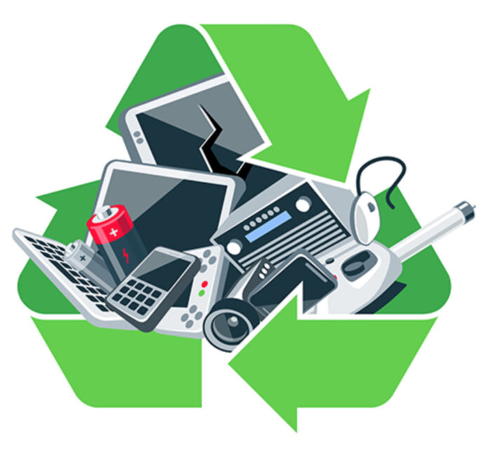

Logística reversa com impacto positivo
Promovemos o descarte consciente e responsável de resíduos eletrônicos, conectando pessoas e comunidades a práticas sustentáveis que respeitam o meio ambiente e fortalecem a economia circular. Nosso trabalho está alinhado aos Objetivos de Desenvolvimento Sustentável (ODS), impulsionando a educação ambiental e fomentando uma cultura de responsabilidade social que transforma atitudes e gera impacto real. Juntos, construímos um futuro mais limpo, justo e inovador.
Sobre os ODS
Os ODS são uma agenda global criada pela ONU com 17 objetivos que visam acabar com a pobreza, proteger o meio ambiente e garantir paz e prosperidade para todos até 2030.
Destaque Visual
Insira aqui outra imagem que dialogue com os temas apresentados.
Outra imagem vai aqui